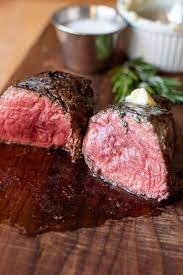

Filet Mignon

The best filet mignon in the world!
This is a recipe my wife has perfected after many years of trial and error. Our family loves it, and we hope you do too!
This organic, grass-fed filet mignon is guaranteed to wow any guests you may serve.
Ingredients:
- Organic, grass-fed filet mignon
- KerryGold Butter
- Salt
- Pepper
- Oregano
- Rosemary
Steps to perfection
- Start by removing your filet mignons from the refridgerator 30-60 minutes before expected cook time. This allows the meat to reach an even temparature all the way through.
- You are now ready to begin pre-heating your oven to 350F.
- Place your cast-iron skillet on the stove on medium-high heat with 2 tbsp butter for 3 minutes, then place your steaks in the skillet and sear until browned on side. Flip the steak and sear the other side until browned.Avoid moving steaks during searing process to ensure a crispy,brown crust.
- Immediately remove skillet from oven and add your seasonings and more butter to the pan.Baste your steaks with a few spoonfuls of the melted butter before placing in the oven
- Place your steaks in the oven for approxametly 3 minutes for a perfect, medium-rare filet mignon.Cooking times will vary based upon meat weight and cooking preference
- The last step is vital to a perfect steak. Let the steaks rest! Allow your steaks atleast 5 minutes to sit and cool on the plate before serving. This allows the meat to retain all the juices that are released when the steak is cut.